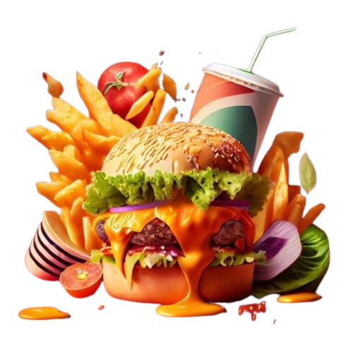
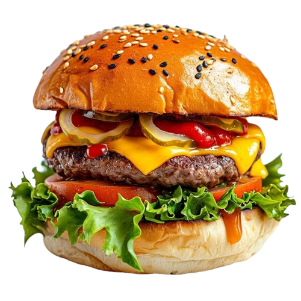
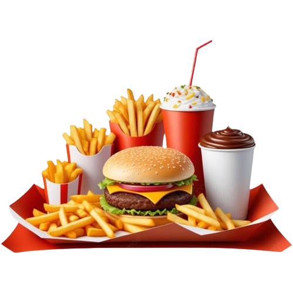

WELCOME TO BURGER LAB
Burger Lab is a popular fast-food chain that specializes in gourmet burgers, offering a modern twist
on the classic burger experience. Known for its creativity, high-quality ingredients, and unique
flavors, Burger Lab has made a name for itself as a go-to destination for burger lovers.
ABOUT US
Burger Lab was founded in 2014. The brand was founded by a group of young entrepreneurs in
Karachi, Pakistan.Burger Lab's journey is a compelling story of innovation, entrepreneurial
spirit, and overcoming challenges. Below is a detailed account of the background of the owners,
their struggles, and the evolution of the brand.When Burger Lab was launched in 2014, the
Pakistani market was already saturated with numerous fast-food chains, both local and
international. Competing with established brands like McDonald's and KFC was a significant
challenge.

OUR SERVICES
Burger Lab offers a range of services designed to provide customers with a unique and satisfying
fast-food experience. Here’s an overview of the services offered by Burger Lab. Friendly and
efficient staff are available to take orders, serve food, and assist customers with their
needs.For customers on the go, Burger Lab offers quick takeaway services. Customers can place
orders at the counter and receive their food promptly, packaged for convenience. Many Burger Lab
outlets offer in-house delivery services, ensuring that customers receive their orders quickly
and fresh.Customers can place orders directly through the Burger Lab website or mobile app. The
online platform allows customers to browse the menu, customize their orders, and select delivery
or pickup options.Burger Lab provides multiple channels for customer feedback, including online
forms

OUR BRANCHES
THERE ARE TOTAL 5 BRANCHES OF BURGER LAB IN KARACHI
NORTH NAZIMABAD
GULBERG TOWN
GULISTAN-E-JOHAR
SHAHRAHE FAISAL
GULSHANE IQBAL
